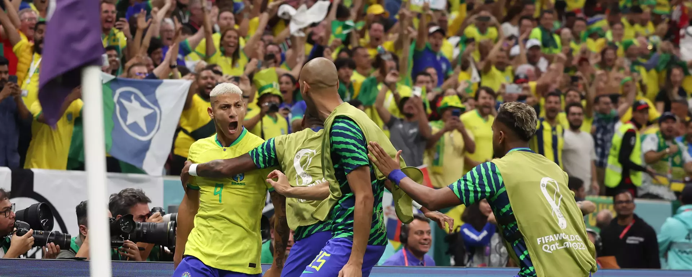

Copa do Mundo no Qatar 2022
Tudo sobre a copa do mundo no Qatar

Os Melhores
Melhores jogadores da copa do mundo.

Começão Os jogos
Que comecem o s jogos da copa do mundo do Qatar.
Copa do mundo no Catar Chegou, Venha ver mais sobre esse grandioso campeonato
Tudo sobre a copa do mundo no Qatar
Melhores jogadores da copa do mundo.
Que comecem o s jogos da copa do mundo do Qatar.
Com sete cidades-sede, o campeonato está sendo disputado entre 20 de novembro e terminará em 18 de dezembro.
Ao invés do período tradicional devido às altas temperaturas que o país sofre no meio do ano; esta é a primeira vez em que uma Copa do Mundo é disputada no final do ano.
Este grupo consiste em Qatar, Equador, Senegal e Holanda
Este grupo consiste em Inglaterra, Irã, Estados Unidos e País de Gales
Este grupo consiste em Arábia Saudita, Polônia, México e Argentina
Este grupo consiste em França, Tunísia, Dinamarca e Austrália
Este grupo consiste em Espanha, Japão, Alemanha e Costa Rica
Este grupo consiste em Bélgica, Croácia, Marrocos e Canadá
Este grupo consiste em Brasil, Suíça, Camarões e Sérvia
Este grupo consiste em Portugal, Coreia do Sul, Uruguai e Gana

A Copa do Mundo é uma competição de futebol realizada pela Federação Internacional de Futebol a cada quatro anos. Esse evento é a maior e mais importante competição de futebol organizada pela Fifa e, em sua estrutura atual, é composto por 32 seleções.

A organização da Copa do Mundo Catar e a Fifa criaram salas sensoriais para torcedores com necessidades especiais em três estádios do Mundial: Al Bayt, Lusail e Education City.

técnico Tite confirmou, neste domingo (4), o retorno de Neymar contra a Coreia do Sul, em partida válida pelas oitavas de final da Copa do Mundo do Catar.
A Copa do Mundo de 2022, sediada no Catar, começa no dia 20 de novembro. Oito estádios devem receber os jogos no país, dos quais sete foram construídos para o evento e um foi reformado.